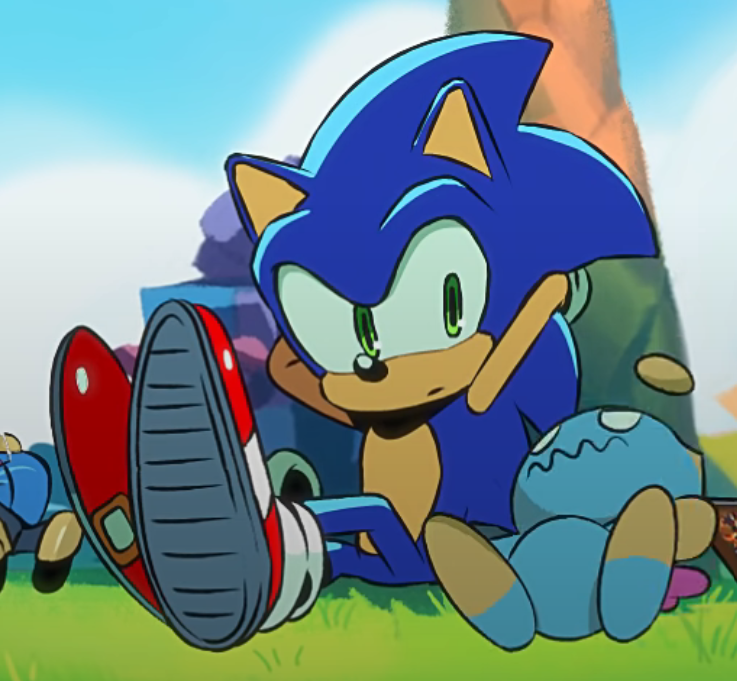

awesome sonic shit
for your very low powered chromebook
A portal to high-speed, unblocked fun optimized for low-end hardware.
 Sonic the Hedgehog
 Emulators
Emulators
🎮 Tiger Electronics Game.Com
Click to reveal the dark truth.
Why the hell wont you play game.com?
CAUSE GAME COM KILLED MY GRANDMA!
I ATE MY GRANDMA <:D